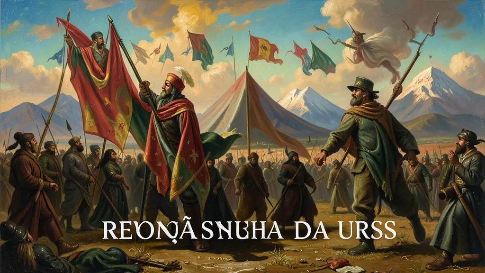
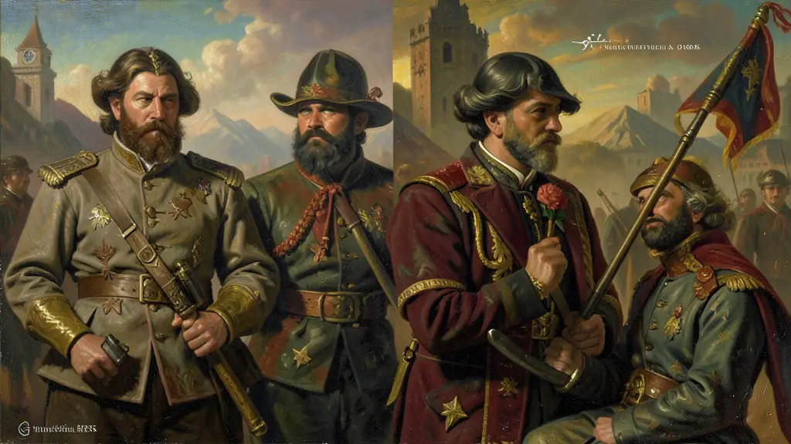
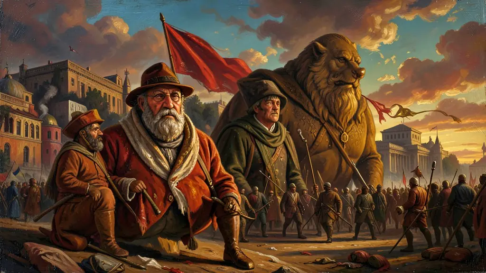

Capítulo 01
1. O Domingo Sangrento e o Prelúdio de 1905
Povo faminto em frente ao Palácio de Inverno pedindo apenas pão e democracia. A resposta do Czar foi o fuzilamento. Esse dia quebrou o mito de que o Czar era o 'pai' da nação. Nasceram aí os Soviets — comitês de operários e soldados — que seriam a base da revolução dozes anos depois. O regime tentou se salvar criando a Duma (parlamento), mas era tarde demais para o reformismo liberal.

Capítulo 02
2. Mencheviques vs. Bolcheviques: A Cisão
Os Mencheviques (minoria) acreditavam que a Rússia precisava passar por um capitalismo industrial antes de ser socialista. Queriam reformas graduais. Já os **Bolcheviques** (maioria) queriam a revolução imediata liderada por um partido de profissionais. Para Lênin, o tempo das palavras acabou quando os soldados russos começaram a morrer na lama das trincheiras da Grande Guerra.

Capítulo 03
3. Paz, Terra e Pão: O Marketing Revolucionário
Lênin entendeu o que o povo queria. A Rússia foi o primeiro país a sair da 1ª Guerra (Tratado de Brest-Litovsk), entregando territórios para ganhar tempo. A reforma agrária deu terras aos mujiques (camponeses) e as fábricas foram entregues aos operários. Esse tripé garantiu o apoio das massas contra a resistência dos antigos nobres e generais brancos.

Capítulo 04
4. Guerra Civil e o Comunismo de Guerra
A Rússia virou um inferno. Para alimentar as cidades durante a guerra, o governo confiscava a produção dos camponeses à força (Comunismo de Guerra). Leon Trotsky organizou o Exército Vermelho com um punho de ferro, derrotando os invasores estrangeiros e os contra-revolucionários. A vitória custou milhões de vidas e gerou o endurecimento da repressão política soviética.
Capítulo 05
5. De Lênin a Stalin: O Desvio Totalitário
Lênin tentou abrir um pouco a economia com a NEP ('um passo atrás para dar dois à frente'), permitindo pequenas empresas privadas. Mas com sua morte, Stalin derrotou Trotsky e impôs a Coletivização Forçada. A URSS cresceu industrialmente a um ritmo alucinante, mas ao custo de campos de trabalho forçado (Gulags) e da morte de toda a oposição interna. O sonho socialista tornava-se um pesadelo burocrático.
A Revolução Russa de 1917 representou a primeira tentativa histórica bem-sucedida de implementar o regime socialista em escala nacional, rompendo com o modelo de democracia liberal burguesa. Em um país ainda majoritariamente agrário e sob a autocracia czarista, os bolcheviques liderados por Lênin e Trotsky conseguiram canalizar o desespero das massas (intensificado pela Primeira Guerra Mundial) sob o lema 'Pão, Paz e Terra'. A tomada do Palácio de Inverno não foi apenas um golpe de Estado, mas o início de uma reconfiguração radical das relações de propriedade e poder.
O governo soviético enfrentou anos de guerra civil e isolamento internacional, levando à implementação do Comunismo de Guerra e, posteriormente, da Nova Política Econômica (NEP), que tentava conciliar elements de mercado para salvar a economia. Com a morte de Lênin e a ascensão de Stalin, a União Soviética transformou-se em uma potência industrial e militar através de planos quinquenais forçados e da coletivização agrícola, mas ao custo de um autoritarismo extremo e da eliminação sistemática de opositores no partido e na sociedade.
O impacto da Revolução Russa no século XX foi profundo: ela inspirou movimentos anticoloniais, revoluções socialistas na China e no Sudeste Asiático, e forçou as democracias ocidentais a adotarem o Estado de Bem-Estar Social (Welfare State) como uma forma de conter o avanço do ideal comunista entre os trabalhadores. Para o Enem, é vital compreender a revolução sob a perspectiva da polarização mundial e dos seus reflexos no Brasil, como a formação do PCB e o surgimento da Aliança Nacional Libertadora nos anos 30.
Fonte: FIGES, Orlando. A Tragédia de um Povo: A Revolução Russa (1891-1924). Rio de Janeiro: Record, 1999.
Atividades interativas
Questões para fixar
O lema 'Todo poder aos Soviets', defendido pelos bolcheviques em 1917, referia-se a quais instâncias de organização?
A Nova Política Econômica (NEP), adotada por Lênin em 1921, foi uma medida de emergência que consistia em: